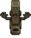
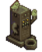
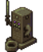

Witch's Hut


The Witch's Hut is found in the Witch's Swamp, and becomes accessible after completing the Dark Talisman Quest.
Inside the Witch's Hut are three shrines, the Wizard's missing Magic Ink (on a table in a purple bottle), and a red teleportation rune on the ground. Returning the Magic Ink to the Wizard unlocks five "magic" buildings for The Farm. Stepping on the rune will teleport the player directly to the Wizard's Tower basement room.
Once the player has gained 4 hearts of friendship with the Wizard, the teleportation runes located in the Witch's Hut and Wizard's Tower basement can be used at anytime to teleport between the two locations. Prior to earning 4 hearts, the player will be teleported to the Wizard's basement from the Witch's Hut, but will not be able to return.
Shrines
| Image | Name | Description | Offering |
|---|---|---|---|
|  | Dark Shrine of Memory | The relationship between you and your ex-spouses will be wiped from memory. It will be like you've never met. Note: This also affects Krobus as an ex-roommate. |
|
|  | Dark Shrine of Selfishness | Your children will turn into doves and fly away... Note: This permanently removes them from the game. |
|
|  | Dark Shrine of Night Terrors | The ancient magi-seal of protection will be lifted, allowing monsters to appear on your farm at night. Note: This shrine acts as a toggle to turn monsters on or off. It works for all Farm Maps, including Wilderness. Restoring the "magi-seal" requires another Strange Bun. |
Quests
The questline to access the Witch's Hut involves two quests, which become available after completing the Community Center Bundles or the Joja Community Development Form. The player can trigger a cut scene at the Railroad, where the Wizard will request they find a Dark Talisman, which can be found in a chest within the Mutant Bug Lair. The Mutant Bug Lair can be accessed by speaking to Krobus, who will reveal the entrance in the Sewers. After obtaining the Talisman, bring it back to the Railroad area and place it on the artifact blocking the cave. Inside the cave is a teleportation rune which leads to the Witch's Swamp.
Once inside the Witch's Swamp, the Witch's Henchman will be blocking the way to the Witch's Hut. He will only allow the player to pass if he is given Void Mayonnaise, which also completes the quest Goblin Problem. Recover the Magic Ink inside the Witch's Hut, then bring the ink back to the Wizard, who will unlock the six Wizard buildings for The Farm.
| Quest Name | Quest Text | Provided By | Requirements | Rewards |
|---|---|---|---|---|
| Dark Talisman | The Wizard asked me to retrieve the magic ink from his ex-wife's house... but to gain access I'll need a dark talisman. Enter the sewer and ask Krobus about the dark talisman. | Enter the Railroad area after completing the Community Center Bundles or the Joja Community Development Form. | Speak to Krobus to gain entrance to the Mutant Bug Lair, then retrieve the Dark Talisman. Return to the Railroad area and place the Dark Talisman on the artifact blocking the cave. |
|
| Goblin Problem | There's a goblin blocking the path to the Witch's hut. There must be some way to get him to move... Perhaps I should seek out more information on Goblins. | Completing the quest Dark Talisman | Speak to the Witch's Henchman in the Witch's Swamp, and give him a Void Mayonnaise to gain entrance to the Witch's Hut. Find the Magic Ink and return it to the Wizard. |
|
Gallery

History
- 1.1: Introduced.
| Buildings | ||
|---|---|---|
| Merchants | Abandoned House • Adventurer's Guild • Blacksmith • Bookseller • Carpenter's Shop • Casino • Desert Trader • Fish Shop • Giant Stump • Harvey's Clinic • Ice Cream Stand • Island Trader • JojaMart • Marnie's Ranch • Oasis • Pierre's General Store • Qi's Walnut Room • The Stardrop Saloon • Traveling Cart • Volcano Dwarf • Wizard's Tower | |
| Houses | 1 River Road • 2 River Road • 1 Willow Lane • 2 Willow Lane • 24 Mountain Road • Elliott's Cabin • Farmhouse • Island Farmhouse • Leah's Cottage • Mayor's Manor • Tent • Trailer • Treehouse | |
| Farm Buildings | Farming | Barn • Cabin • Coop • Fish Pond • Greenhouse • Mill • Pet Bowl • Shed • Silo • Slime Hutch • Stable • Well |
| Special | Desert Obelisk • Earth Obelisk • Farm Obelisk • Gold Clock • Island Obelisk • Junimo Hut • Water Obelisk | |
| Other Buildings | Community Center • Dog Pen • Island Field Office • Joja Warehouse • Movie Theater • Museum • Spa • Witch's Hut | |